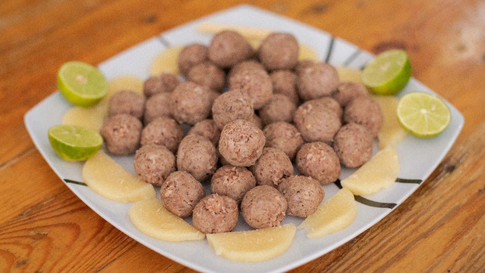

Arepas
Delicias hechas a base de maíz, de forma circular o redonda. Se puede servir en el desayuno con queso o mantequilla o de acompañante en la bandeja paisa.

Butifarras
Embutidos tradicionales, sumamente popular en Soledad, Barranquilla específicamente. Consisten de salchichas ahumadas y curadas, principalmente a base de carne de cerdo, que incluyen otros ingredientes como especias y hierbas aromáticas.

Bandeja paisa
Uno de los platos insignia de la gastronomía colombiana, proveniente de Antioquia. Comúnmente contiene frijoles negros, arroz, chicharrón, carne molida, chorizo, morcilla, huevo frito, plátano maduro, aguacate y arepa.